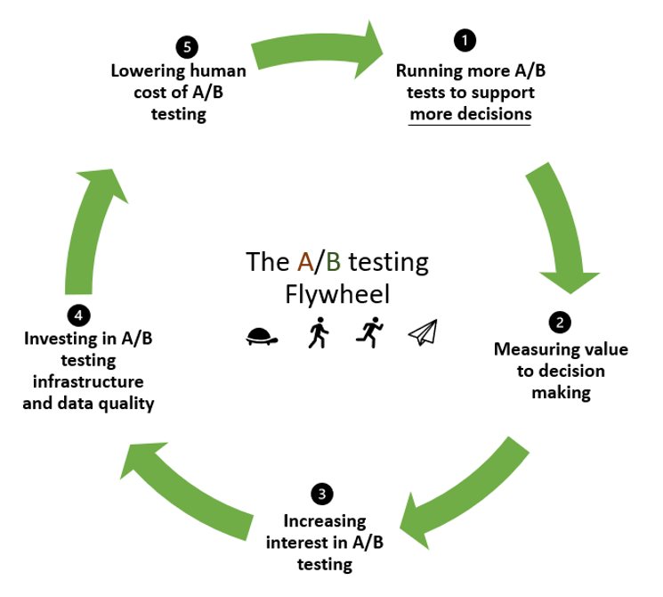

In-house A/B Experimental Platform
Building a Foundation for Data-Driven Organization

Our journey towards developing an in-house A/B testing platform began with a clear vision: centralizing our A/B testing efforts to reduce the complexity of running A/B tests and fostering an experimentation culture within our organization. We were fortunate to have the guidance of a distinguished A/B testing expert from a top university in the US who provided valuable insights and consultation throughout the project.
Project Inception and Initial Challenges
As the first team member entrusted with the in-house A/B platform initiative, my role was all-encompassing, involving comprehensive oversight of the entire project. My first challenge was to decide whether to build the platform from the ground up or purchase an existing solution.
We opted to build an in-house A/B platform for several reasons. Data security was our top priority, and we were determined to keep sensitive data within our organization. Additionally, our diverse array of applications and channels required a platform that could adapt to various business teams' needs and quickly incorporate new features. Importantly, our vision extended beyond typical front-end and UI testing; we aimed to encompass back-end features and evaluate machine learning models to gauge their performanc
Building upon an Open Source Foundation
Our A/B experimental platform comprised three core components: experiment configuration, user allocation, and logging. A fully matured platform would also include automated result analysis and visualization. We began our journey with these three fundamental components and chose to build upon an open-source framework, Growthbook, which handled user randomization. Our plan was to build microservices on top of this framework for other essential components. This approach would allow applications interested in running A/B tests to seamlessly integrate with our platform through API calls. For the result analysis and visualization components, they were manually executed outside the platform. This deliberate choice was made to expedite the platform's implementation. By carrying out these tasks manually, we optimized the implementation effort to launch the POC as quickly as possible.
Product Management and Collaborative Efforts
As the high-level architecture of the platform began to take shape, I was assigned a dedicated developer to create a proof of concept (POC). I worked closely with the A/B platform developer to ensure a comprehensive understanding of the requirements and the fundamental principles of A/B testing.
During this phase, an application expressed interest in conducting A/B testing on its registration page, and the product team was eager to utilize our A/B platform for this purpose. Given our yet-to-be-established infrastructure, we leveraged the application's existing infrastructure to host our microservices. I collaborated with the application's product owner to design an experiment for the registration page, which was a straightforward UI test. Suitable for a POC. We also worked closely with the application development team to ensure seamless integration with our platform.
The main challenge during this integration was the application's rigorous manual testing protocols, which caused the integration process to exceed our initial time and cost estimates. Nevertheless, the experiment's results revealed intriguing insights and surprised all involved parties.
Scaling up the A/B Experimental Platform
The success of our POC attracted the attention of another business unit—the marketing team, with a substantial user base in the hundreds of thousands. This team sought to conduct A/B tests on machine learning models for personalized marketing campaigns. We established dedicated infrastructure for the platform and collaborated with three stakeholders: the data science team (responsible for constructing ML models), the business team (responsible for launching marketing campaigns), and the marketing channel developer team
To tackle this case, we expanded our A/B team to include a total of three developers. We established dedicated infrastructure for the platform and collaborated with three stakeholders: the data science team (responsible for constructing ML models), the business team (responsible for launching marketing campaigns), and the marketing channel developer team.
My overarching responsibility was to ensure the marketing team could execute reliable A/B tests within their timeline. To achieve this, we conducted weekly meetings to compile requirements, outline deployment procedures for ML models, define essential metrics for tracking, outline the development process, and communicate the limitations of our A/B platform.
With comprehensive integrations and experiment designs in place, we successfully launched A/B testing with personalized marketing campaigns in July 2022, marking a significant milestone in our journey towards data-driven excellence.